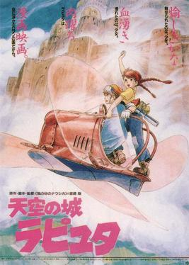

HOME

Laputa: Castle In The Sky
天空之城
(1988)
《天空之城》是由吉卜力工作室制作，宫崎骏执导。在1986年8月2日首映的日本动画电影，作品的原作、导演、剧本和角色设定由宫崎骏来担任。吉卜力工作室首次公开的剧院作品。这部电影在1986年获得了Animage动漫大奖并获得了积极的评价，在最佳动画电影列表的日本民意调查中，《天空之城》在2006年文化厅媒体艺术祭上被评为第二佳动画电影，并在2008年Oricon观众投票中被评为第一名。《天空之城》对日本流行文化影响重大，它影响日本国内与海外的动画及漫画系列作品，也被誉为是蒸汽朋克和柴油朋克流派中最具有影响力的代表作品。
《天空之城》故事背景设定在19世纪后期的蒸气朋克虚构世界，讲述了男孩和女孩试图从军队、秘密特工和海盗家族手中夺走一块强大的水晶并寻找传说中的天空之城“拉普达”的冒险经历。